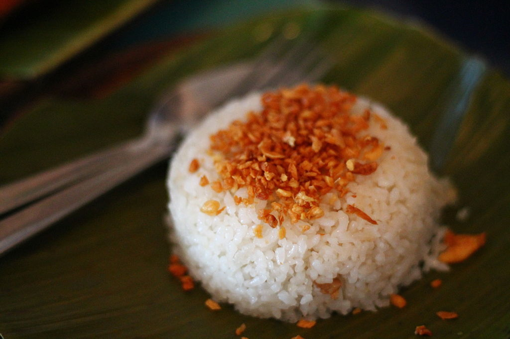

Garlic Fried Rice

The perfect partner
A very simple dish that will leave your taste buds wanting more, usually served during breakfast accompanying a savory side dish or just fried egg. Your breathe may stink of garlic, but hey, its so worth it!
Ingredients:
*Tantsyahan*
- Day Old Rice
- Lots of Garlic
- Butter
- Salt
Steps:
- On low heat, cook your garlic in oil until golden brown.
- Crush your rice, your may add salt at this stage if your wish to do so.
- Add your rice to the pan with garlic and add butter.
- Mix well.
- Serve and enjoy!
Back to top
Back to main page